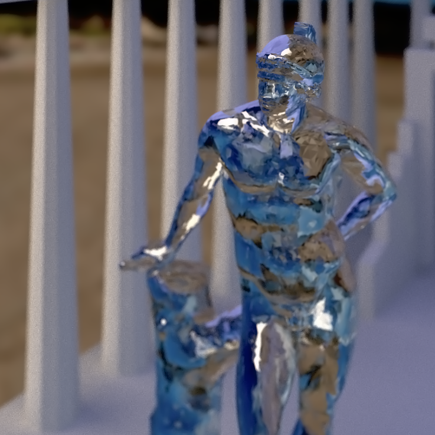
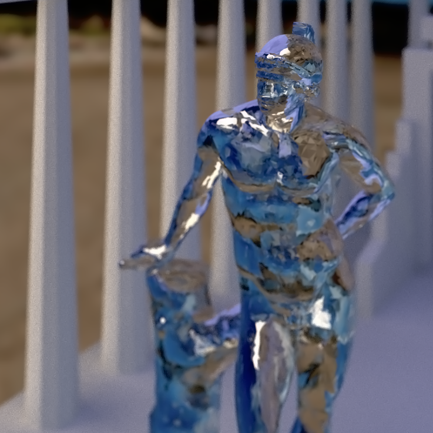

Description
A timely selection from the following topics:
- GPU Computing: GPU architecture, massively parallel programming, parallel algorithms, performance
- Rendering: Graphics pipeline (rasterization), path tracing, deferred shading, forward+ rendering, VR
- APIs: CUDA, WebGL, Vulkan
This is a project-intensive course with significant coding, writing, and presenting. It is more work than any other course, but it is worth it.
For a course more focused on GPU architecture without graphics, see Joe Devietti's CIS 601.
Prerequisites
- Passion for computer graphics.
- CIS 460/560: Introduction to Computer Graphics. Preferably received an A. Knowledge of rasterization and ray tracing.
- Strong C or C++.
- Also useful:
- CIS 371: Digital Systems Organization and Design, or
- CIS 501: Introduction to Computer Architecture.
Repos, Schedule, Google Group, and LinkedIn
Head Lecturer
Shehzan Mohammed
Course Advisor
Patrick Cozzi, pjcozzi+cis565@gmail.com
Teaching Assistants
Ottavio Hartman, hartmano@sas.upenn.edu
Office: SIG Lab
Office Hours: TBA
Yash Vardan, yashv@seas.upenn.edu
Office: SIG Lab
Office Hours: TBA
Youssef Victor, vicy@seas.upenn.edu
Office: SIG Lab
Office Hours: TBA
Recommended Reading
No books are required, but course material comes from many sources including:
Grading
- Projects: 50%
- Final Project: 50%
Academic Integrity
An academic integrity violation will result in the student receiving an F in this course.
See Academic Integrity at the University of Pennsylvania: A Guide for Students.
Acknowledgments
Joe Kider, Gary Katz, and Suresh Venkatasubramanian taught this course before me.
All former TAs have helped shape this course: Kaixiang Miao, Austin Eng, Shuai Shao (Shrek), Gary Li, Kai Ninomiya, Harmony Li, Liam Boone, Karl Li, Varun Sampath, and Jon McCaffrey.
Previous students have provided significant course feedback including: Xing Du, Karl Li, and Ian Lilley.
Many passionate folks in our field have also provided course input: Johan Andersson, (@repi),Quarup Barreirinhas, (@quarup), Wolfgang Engel, (@wolfgangengel), Mikkel Gjoel, (@pixelmager), Eric Haines, (@pointinpolygon), Dominik Lazarek, (@Omme), Emil Persson, (@_Humus_), and Christophe Riccio, (@g_truc).
|


 
